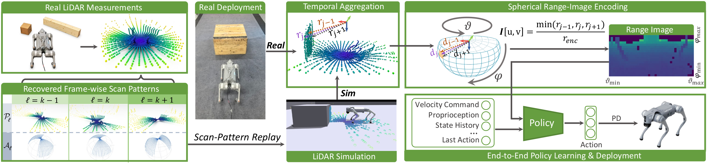

01Demonstration 01
02Demonstration 02
RANGE IMAGE—
nearfar
0:00.00 / 0:00.00
Muted autoplay · use controls for sound
In submission

Existing legged-locomotion systems commonly rely on depth images or online elevation maps. However, depth-based policies suffer from perceptual sim-to-real discrepancies due to imperfect depth sensor modeling, while map-based approaches are vulnerable to drift and misalignment. LiDAR offers direct measurements of the surrounding geometry, but raw LiDAR scans lack a compact, structured representation for high-frequency control. We propose a LiDAR perception pipeline that maintains perceptual consistency across simulation and reality through sensing- and representation-level alignment. At the sensor level, we recover frame-wise angular sampling patterns from the physical LiDAR and replay them in simulation with GPU ray casting. At the representation level, simulated and real returns undergo the same spherical range image encoding, yielding a fixed-size policy observation for end-to-end training and direct deployment without teacher--student distillation, online elevation mapping, or adaptation. Experiments show that our range-image policies achieve stronger sim-to-real transfer than depth- and elevation-map-based baselines, while ablations confirm the importance of the proposed sensing components.
Step (0.45 m high), Gap (0.9 m wide), and Hurdle (0.4 m high). All videos loop at 1× speed and are muted by default.